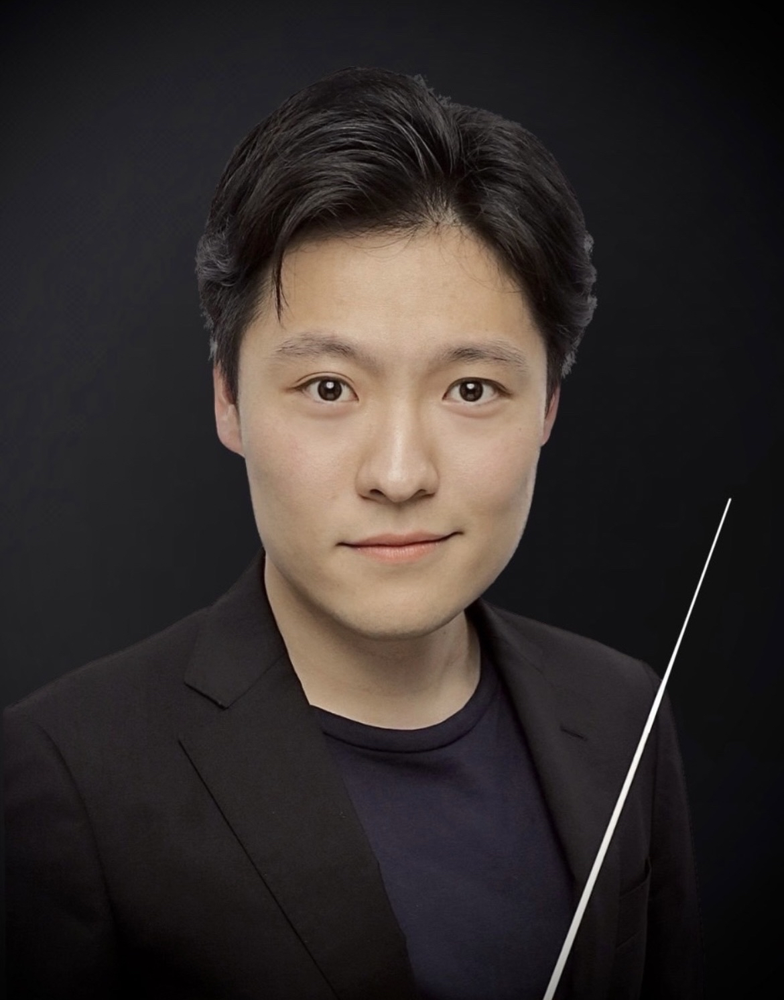

Violinist & Conductor
佐藤 瑛吾
Eigo Sato
Scroll
プロフィール

経歴
2000年生まれ・東京都出身。東京外国語大学国際日本学部卒業。東京音楽大学指揮研修生修了。一般社団法人VariOrchestra代表理事・音楽監督。ヴァイオリンを白瀬ゆり、伊藤亮太郎の各氏に、指揮を増井信貴氏に師事、アカデミー等を通じて阪哲朗氏、リッカルド・ムーティ氏らの指導を受ける。これまでにワロン王立歌劇場管弦楽団、大阪交響楽団、東京春祭オーケストラ等を指揮。映画『遠い山なみの光』では広瀬すず氏へのヴァイオリン演奏・所作指導に携わる。
主な受賞歴
- Bach International Music Competition UK2024 第1位（指揮部門）
- Max Bruch International Competition2024 Platinum Prize（指揮部門）
- Gabriel Faure Music World Competition 第1位（指揮部門）
- 2025年ベルギー国際オペラ指揮者コンクール本選出場
その他
NTTDグループのコンサルティングファームで金融業界向けの経営・事業戦略策定・業務改革等の支援にも従事しており、『The Finance』への寄稿実績もある。
Movie
ベートーヴェン：交響曲第9番「合唱付き」
学芸×第九特別演奏会（2024年）
ブラームス：交響曲第1番
VariOrchestra特別公演 Vol.1
モーツァルト：セレナータノットゥルナ
VariOrchestra 第五回定期演奏会
2026年以降の公演予定
2026/02/05
大手コンサルティングファームイベント
パレスホテル
Vn.
2026/05/02
VariOrchestra定期演奏会 ベートーヴェン×ブラームスツィクルスVol.1
武蔵野市民文化会館大ホール
指揮
ベートーヴェン：交響曲第1番・第2番 / ブラームス：交響曲第1番
2026/05/10
Legame String Orchestra 第三回演奏会
会場未定
指揮
2026/05/27
ドン・ジョヴァンニ公演
渋谷伝承ホール
副指揮
2026/10/04
VariOrchestra定期演奏会 ベートーヴェン×ブラームスツィクルスVol.2
武蔵野市民文化会館大ホール
指揮
ベートーヴェン：交響曲第6番「田園」 / ブラームス：交響曲第2番
2026/12/18
VariOrchestra特別公演 オペラ企画
武蔵野市民文化会館小ホール
指揮
2027/03/13
VariOrchestra定期演奏会 ベートーヴェン×ブラームスツィクルスVol.3
武蔵野市民文化会館大ホール
指揮
エグモント序曲 / ブラームス：ヴァイオリン協奏曲 / ベートーヴェン：交響曲第3番「英雄」
お問い合わせ
演奏・指揮のご依頼、メディア出演、その他お問い合わせはこちらからお気軽にどうぞ。